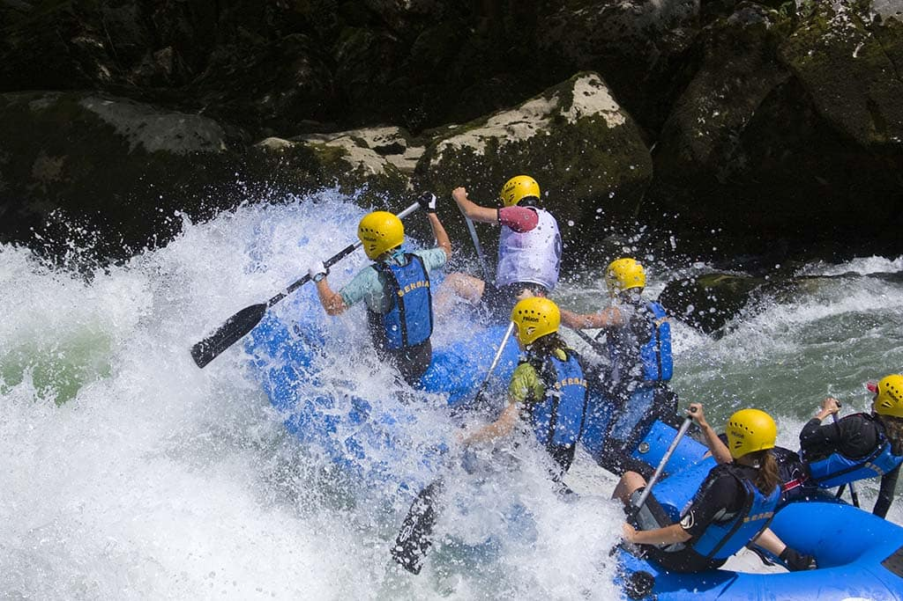
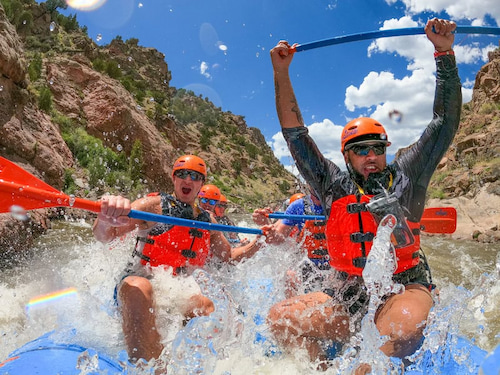

YAAAARRG! We be swashbuckling about the decks and rowing down the streams. Shiver my timbers! Avast, ye scurvy dogs! We be tradin' our doubloons for a ride on the wildest rapids in the seven seas. Jolly Rodger himself be guidin' our vessel through the frothy brine, so batten down the hatches and prepare to shiver them timbers. We’ll be swashbucklin' down the streams until we find the hidden booty tucked away in the roarin' currents. YAAAARRG!


Jolly Rodger Rapids Adventur Co.
History
Founded by Jolly Rodger himself, carried on by swashbuckling successors for hundreds of booty finding years!